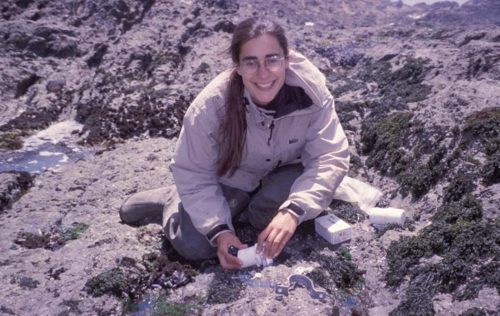
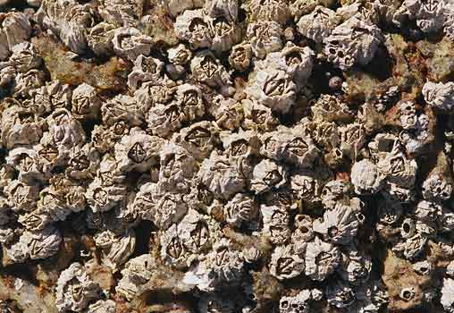
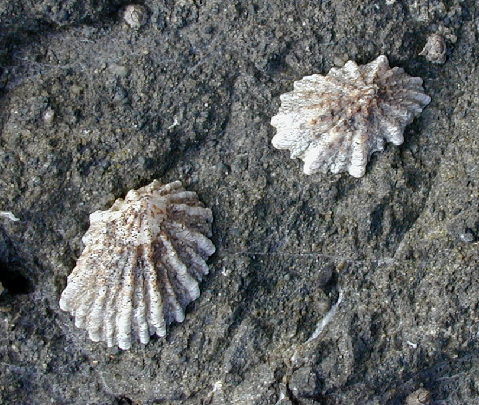
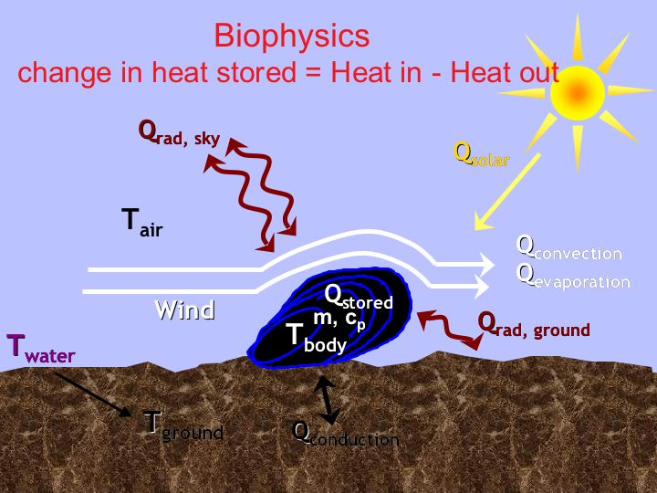

One major goal of my research is to understand how temperature influences the ecology and
distribution of intertidal species. I study both the immediate effects of temperature on
individual success and survival, and also its more subtle effects on species interactions,
population dynamics, and patterns of local adaptation. Intertidal organisms contend with a
highly dynamic and complex environment. The alternate exposure to air and water via tidal
cycles confronts organisms with two distinct environments, each with its own range of physical,
biochemical, and ecological challenges. Thermal environments in the rocky intertidal are
uniquely complex. Organismal body temperatures may vary by more than 20 °C over a daily
tidal cycle, and individuals separated by less than a meter may show differences in maximal
body temperature of 10°C or more. This thermal variation is repeated at larger spatial scales: a single species may be distributed from tropical to temperate environments, encompassing large
latitudinal thermal gradients. Similarly, temporal variation in temperature occurs between
seasons, inter-annually, and over longer periods through climate change.
Current Research
The vertical limits of the barnacle Balanus glandula
 Intertidal zonation is a ubiquitous pattern on rocky shores world-wide. Upper vertical limits are generally thought to be controlled by abiotic stress, particularly heat stress, and much effort has gone into the physiological mechanisms that frame organismal responses to thermal stress. Yet, while laboratory measurements of stress tolerance are generally correlated with vertical position on the shore, laboratory-measured limits to thermal tolerance often exceed the temperatures organisms actually experience in the field. The missing link between tolerance and distribution may be energy supply. My current research a combination of whole-organism physiology, energy budget modeling, and field experiments to address two specific questions: 1) Is the upper vertical limit of the barnacle Balanus glandula at one local site influenced by food supply, and 2) Does geographic variation in water temperature shape geographic variation in B. glandula's thermal tolerance. To address these questions I am measuring the thermal tolerance, oxygen use, and feeding rates of barnacles, as a function of both air and water temperatures. I will use these data to parameterize a dynamic energy budget model, and then use the model to map how energy use and energy intake vary with position on the shore. I will combine the model with field data to predict locations where increasing food supply could increase B. glandula's upper limit, and then test this hypothesis by manipulating food supply in a field experiment.
Student Research Opportunities
Paid, thesis, or volunteer research opportunities are available in my lab to work on the barnacle project or on ecological questions involving coastal marine invertebrates. Past/current student thesis projects include:
- The preference of predatory snails for native and nonnative oysters in Newport Bay
- The effect of temperature on the metabolic rates of intertidal animals
- The effects of air and water temperature on the feeding rates of predatory snails
- Using sound to monitor the feeding behavior of predatory snails
- The growth and survival of intertidal barnacles under warm and cool temperatures
You can also find abstracts for past thesis students on the library's website
Other Projects
1. Climate and Species Range Limits
According to the Intergovernmental Panel on Climate Change, global average temperatures are expected to increase by 1 - 6C over the next century. A common prediction is that species will respond to climate change by shifting their geographic distributions poleward, to track temperature changes. Working in the Grosberg Lab at UC Davis, my dissertation research directly addressed this issue by examining in detail the northern range limit of one of these species, the limpet Collisella scabra. C. scabra is a high intertidal herbivorous snail, which occurs along the coast from approximately the California/Oregon border to southern Baja California in Mexico. I expected to find that the northern range limit of C. scabra was controlled by climate, specifically cold stress, and that individuals at the edge of the range were at their physiological limits.
Surprisingly, I found no evidence for cold stress at this species' northern range limit. Survival, growth, and maturation, were often greater for snails I transplanted more than 100 hundred kilometers north of the present range limit than for control snails I transplanted within the range.Furthermore, a comparison of performance with air and water temperature measurements at all field sites suggested that snails did worse at warmer temperatures, regardless of latitude. Finally I found greater variation in both environment and performance over spatial scales of a few meters than between sites separated by 100 kilometers. A general summary of this research can be found on the Global Change Education Program website.
2. Predicting Spatial and Temporal Dynamics of Temperature.
One intriguing result of my dissertation research was a pattern of greater variability in environmental conditions over small spatial scales (<1m) rather than large (100 km). Temperatures in the rocky intertidal reflect a complex interaction among terrestrial climate, seasonal and daily timing of low tides, and the thermal effects of wave splash. To further study temperature dynamics, I worked as a postdoctoral researcher with Dr. Brian Helmuth at the University of South Carolina. In collaboration with Dr. David Wethey of USC, we developed a computer model of the spatial and temporal variability in body temperatures of intertidal mussels (Mytilus spp.). Previous work by Dr. Helmuth documented some of the complex spatial and temporal thermal patterns in these mussels and also measured relationships between meteorological data (e.g. wind speed, air temperature) and heat fluxes in individual mussels. We are using these measured relationships in a computer model that combines meteorological data with information on tidal and wave regimes to predict mussel body temperatures. This model can be used to map the spatial thermal environment of a mussel, to identify specific times and locations that create significant heat stress, and to determine the climatic parameters that most strongly influence body temperatures. Our initial results,indicate that changes in air and water temperature always produce smaller changes in mussel body temperature, with the magnitude of the change varying by location. Thus even simple changes in a single climate parameter may not create consistent effects on body temperature across a species' distribution.
3. Understanding the ecological consequences of temperature.
Temperature can also strongly effect species and community interactions even when it does not alter patterns of mortality or species distributions. For example, one simple effect of temperature on ectotherms is to increase metabolic rates. At warmer temperatures individuals must either increase feeding rates or reduce energy allocations to growth and/or reproduction. In turn, these changes can strongly affect a species’ ecology and its interactions with other species. Changes in feeding rates may affect the abundance of prey species. Changes in size could affect susceptibility to predation or competitive success. These changes can then cascade to other species in the community. Such community level effects of temperature have rarely been studied in ecological systems, yet they may be central to predicting the consequences of climate change.
 In collaboration with Dr. Emily Carrington at the Friday Harbor Laboratories of the University of Washington, I studied the effects of temperature on predator-prey interactions between snails in the genus Nucella and the barnacle Balanus glandula. Barnacles are one of the major space occupying organisms in the rocky intertidal, and predation by whelks such as Nucella spp. is well-known to influence barnacle distribution and abundance. Using techniques to manipulate the body temperature of each species in the field, I am exploring the effect of temperature on the feeding and growth rates of both predator and prey independently. One long term goal is to combine modeling techniques that predict body temperatures with ecological models that relate body temperature to changes in individual performance or population dynamics.
In collaboration with Dr. Emily Carrington at the Friday Harbor Laboratories of the University of Washington, I studied the effects of temperature on predator-prey interactions between snails in the genus Nucella and the barnacle Balanus glandula. Barnacles are one of the major space occupying organisms in the rocky intertidal, and predation by whelks such as Nucella spp. is well-known to influence barnacle distribution and abundance. Using techniques to manipulate the body temperature of each species in the field, I am exploring the effect of temperature on the feeding and growth rates of both predator and prey independently. One long term goal is to combine modeling techniques that predict body temperatures with ecological models that relate body temperature to changes in individual performance or population dynamics.